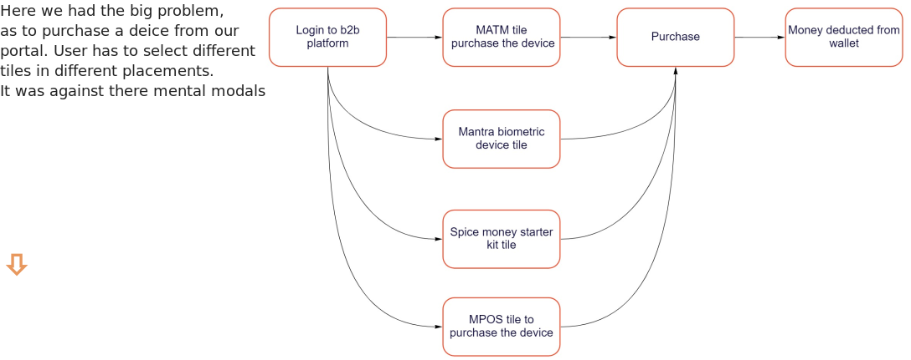
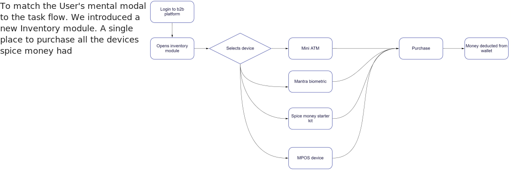

Project brief
A new problem was introduced to us by the business team. The problem was Inventory purchase through b2b was drastically reduced. So we conducted the User research / User interviews from the data we received. After User research / User interviews we found on b2b there were lots of tiles related to purchase the devices. And our merchants were not able to figure out which device should be purchased from which tile. After this confusion our merchants were calling Spice money distributors.
Team size:- 2
Duration:- 2 days
What is Inventory module?
Its an module from which our merchant / Adhikari can buy the devices. The devices are following
- Mini ATM
- Mantra biometric device
- MPOS
- Starter kit
What approach we opted for?
Task flow re-design


Existing task flow

The recommendations
To implement the changes we proposed that spice should not remove these tiles and introduce the new inventory module.
To avoid sudden changes into the b2b portal, we suggested for a intro screen. When a user clicks of any of the device tile he will
be redirected to the introduction page for new inventory module.